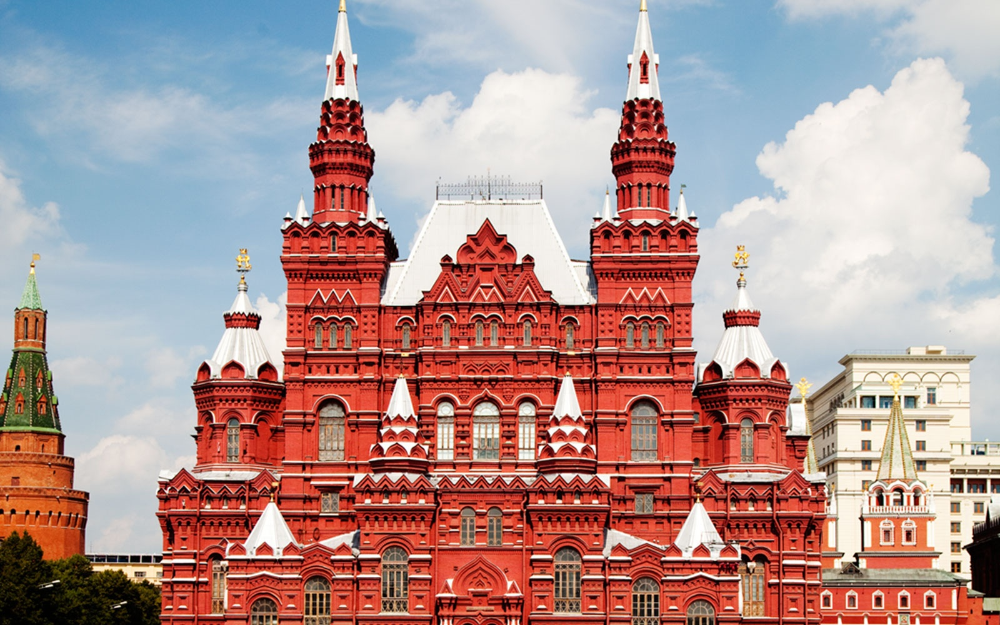
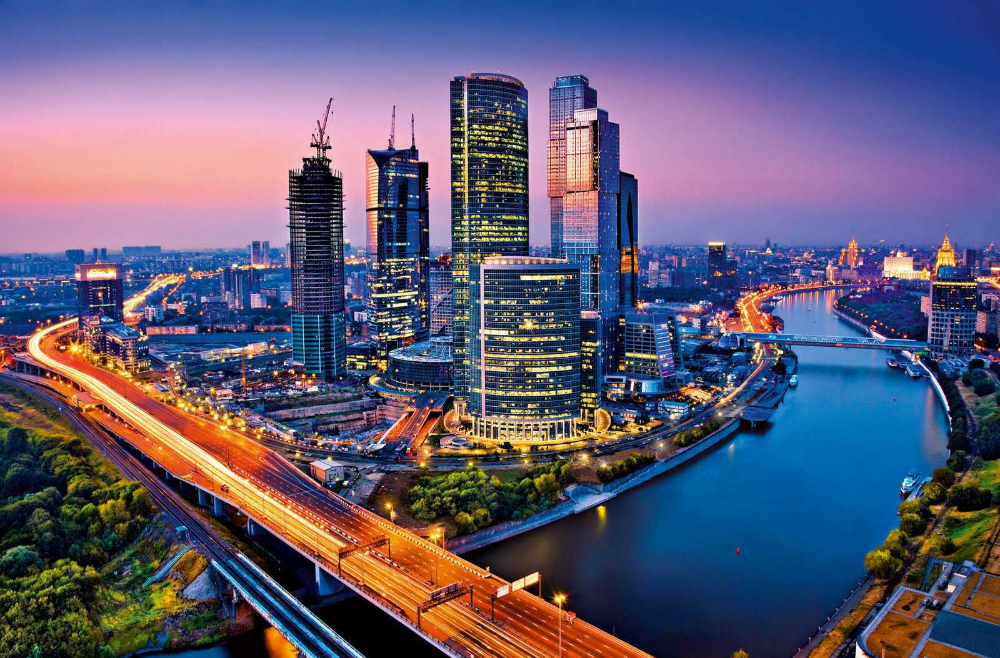
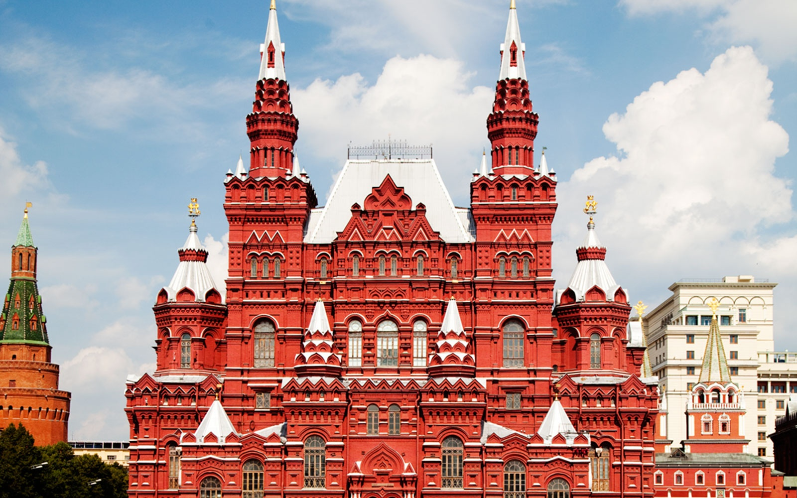
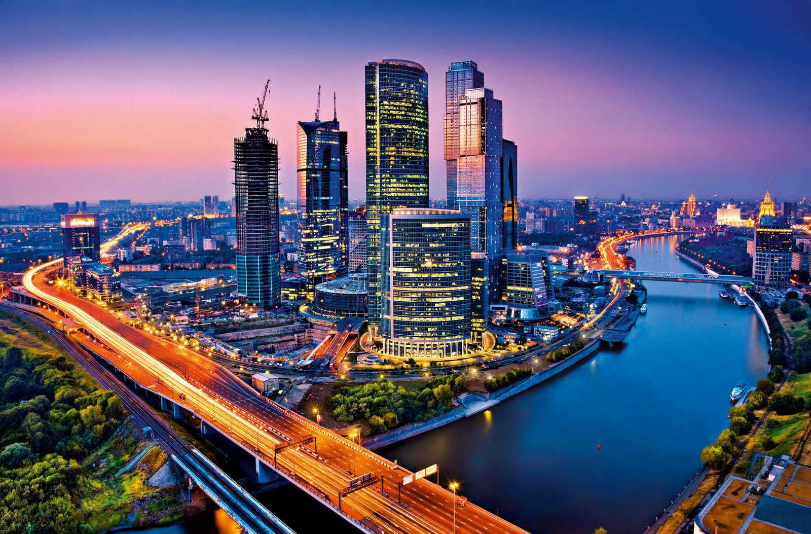

Moskau
Willkommen in Moskau
Keine Spur von Krise, Moskau strahlt: In der Nacht leuchtet nicht nur der Kreml, auch Adelspaläste und Zuckerbäckerbauten, Stuckfassaden und Zwiebeltürme, gläserne Hochhaustürme und prächtige Hotelfassaden liegen im Scheinwerferlicht. An Strom wird hier nicht gespart. Die Hauptstadt Russlands ist eine Megalopolis, die niemals schläft. Durch die Straßen wälzt sich dichter Verkehr, selbst nach Mitternacht. Grelle Leuchtreklamen sollen Gäste in Geschäfte, Diskos und Bars locken. Moskau ist Stadt der Studenten und Künstler, Gral des Nachtlebens, Zentrum der Macht und der Geschäftswelt. Mit circa 15 Mio. Einwohnern ist Moskau die größte Stadt Europas.
Seit 2012 wächst Moskau um 1500 m2 Fläche Richtung Südwesten. Die Finanzkrisen der vergangenen Jahre hat die Metropole bisher nicht nur fast unbeschadet überstanden, die Stadt soll sogar in einer neuen Weltfinanzordnung eines der internationalen Bank- und Börsenzentren werden, so lautet zumindest der ehrgeizige Plan von Wladimir Putin. Dafür wird gebaut und herausgeputzt. Moskau soll in Zukunft noch attraktiver werden.
Der Reichtum aus einem Sechstel der Erde wird hier zusammengetragen, seit Jahrhunderten. Von hier aus begannen die Großfürsten von Moskau einst nach der Befreiung vom Tatarenjoch die „Sammlung russischer Erde“. Moskau war das Herz Russlands, auch als die Hauptstadt zwei Jahrhunderte lang vorübergehend St. Petersburg hieß. Seit fast neun Jahrhunderten wird rund um den Kreml gebaut und gedichtet, werden Kulturschätze angehäuft, wurde ein Weltreich erobert und wurden Revolutionen geplant. All das ist hier zu sehen.
Bei Tag und Nacht flanieren sie vor den Kremlmauern: wettergegerbte Sibirier, Kaukasier mit weißen Schals, stolze Kirgisen, neugierige Japaner und Chinesen, westeuropäische Touristen, indische Turbanträger, neureiche Russen mit Goldkettchen und Handtäschchen, Schulkindergruppen, Milizionäre, Studenten, junge Damen beim Schaulaufen, Rentnerinnen, die heimlich Bierdosen aus der Reisetasche verkaufen. Moskau ist Treffpunkt von Asien und Europa. Und die goldenen Doppeladler hoch über dem Roten Platz auf dem Historischen Museum schauen wachsam nach Ost und West zugleich, wie es sich für das alte und neue Staatssymbol gehört.
Sehenswertes vor Ort
-
Kreml
Als Fürst Juri Dolgoruki 1147 Freunde zu einem Gelage nach Moskau einlud, weil es sich hier angeblich besonders gut feiern ließ, gab es noch keinen Kreml, sondern nur eine kleine Siedlung auf einem 40 m hohen Hügel zwischen den Flüssen Moskwa, Neglinnaja und Jausa. Jedenfalls blieb die Feier in guter Erinnerung und gilt als Gründungsdatum Moskaus. Bei seinem nächsten Besuch 1156 gab Dolgoruki den Auftrag, an dieser Stelle einen Kreml zu errichten, also eine befestigte Stadtburg. Schutz vor den Tataren boten die ersten bescheidenen Holzpalisaden des Moskauer Kremls allerdings kaum. Erst Großfürst Iwan Kalita, Steuereintreiber der Tataren, konnte sich 1326 die erste steinerne Kirche für den Kreml leisten, woraufhin das Oberhaupt der russischorthodoxen Kirche seinen Amtssitz von Wladimir nach Moskau verlegte. Iwan III. schließlich lud italienische Baumeister ein, die ihm die prächtigen Kremlkirchen und Paläste bauten. Der Kreml ist nicht nur die Keimzelle Moskaus, sondern auch des russischen Reichs. In ihm und seiner Architektur konzentrierten sich militärische Macht, Glaube und Reichtum.
-
Chram Christa
Die wieder aufgebaute, leuchtend weiße Kathedrale, deren goldene Kuppeln weithin das Stadtbild prägen, ist inzwischen die wichtigste Kirche Russlands. Weihnachts- und Ostermessen werden hier vom Patriarchen persönlich gehalten. Ursprünglich sollte die Kathedrale 1812 nach dem Sieg über Napoleon gebaut werden, wurde aber erst 1883 fertig. 1931 ließ Stalin die Kirche sprengen. An ihrer Stelle sollte das achte Zuckerbäckerhochhaus entstehen, ein gigantischer, 315 m hoher Palast der Sowjets, gekrönt von einer Lenin-Statue. Doch Probleme mit dem Baugrund und der Finanzierung sorgten für einen Baustopp. Die schon ausgehobene Grube wurde später unter Chruschtschow ganz pragmatisch als Schwimmbecken ausgebaut. Ab 1994 begann der Wiederaufbau der Kathedrale, größtenteils aus Spenden finanziert. Die dramatische Geschichte der Kirche ist in einem Museum im Keller zu besichtigen. Beim Wiederaufbau blieb man dicht am historischen Vorbild. Über 10.000 Gläubige finden in der Kirche Platz. Vor der Kathedrale steht seit 2007 ein 5 m hohes Denkmal für den Reformzaren Alexander II. Eine neue Fußgängerbrücke verbindet die Kathedrale mit dem anderen Moskwa-Ufer.
-
Krasnaja
Der Rote Platz ist der Vorhof des Kreml und heute so etwas wie die gute Stube Russlands. Das Gelände war ursprünglich der Markt- und Versammlungsplatz und wurde auch der "Brandplatz" genannt, weil die Marktbuden so oft abbrannten. "Roter Platz" heißt er erst seit der Zeit Iwans IV. und meint eigentlich nicht nur seine Farbe. Denn "rot" bedeutet im Russischen auch so viel wie "schön". Neuerdings wird im Winter eine Eislaufbahn gegenüber dem Lenin-Mausoleum aufgebaut.
-
Staryi Arbat
So viele Cafés, Souvenirläden, Straßenmusikanten und fliegende Händler wie am Alten Arbat gibt es nirgendwo in ganz Moskau. Nehmen Sie sich Zeit, um ganz einzutauchen. Links und rechts der Fußgängerzone wird ständig gebaut, geplant ist sogar eine Bürgersteigheizung. Und doch hält sich in den alten Straßen und den engen Seitengassen beharrlich die Atmosphäre des einstigen Künstlerviertels. Berühmte Anlaufpunkte am Arbat sind die Puschkin-Museumswohnung und das Wachtangow-Schauspielhaus.
-
Gosudarstwennaja
Wie der Prado in Madrid, der Louvre in Paris oder die Eremitage in Sankt Petersburg ist allein die Tretjakow-Galerie schon ein hinreichender Grund, Moskau zu besuchen. Von mittelalterlichen Ikonen bis zu Marc Chagall reicht die Sammlung. 1892 schenkte der Kaufmann und Kunstmäzen Pawel Tretjakow der Stadt seine 2000 Gemälde und gleich die Sammlung seines Bruders Sergej sowie das Haus, in dem die Kunstwerke schon seit 1881 eintrittsfrei zugänglich waren, dazu. Tretjakow blieb bis zu seinem Tod Direktor der Galerie. Doch erst Revolutionswirren und Bürgerkrieg machten das 1917 verstaatlichte Museum zu dem, was es heute ist. Viele Kunstliebhaber lieferten ihre Kollektionen freiwillig ab. Beschlagnahmte Privatsammlungen aus ganz Russland gelangten in die "Tretjakowka". Gegenwärtig werden 100.000 Kunstwerke gezeigt: von alter russischer Kunst bis zu Werken vom Anfang des 20. Jhs., Grafiken vom 18. bis 20. Jh., russische Skulpturen und Sowjetkunst.
-
Gosudarstwennayj
Ein ganzer Tag reicht kaum für einen Rundgang durch das Puschkin-Museum. Die Sammlung ist mit über 500.000 Exponaten die zweitgrößte des Landes nach der Petersburger Eremitage. Zugrunde liegt ihr die Sammlung der Moskauer Universität aus dem 19. Jh. 1912 wurde das Museum eröffnet, wobei Museumsdirektor Iwan Zwetajew (Vater der Dichterin Marina Zwetajewa) damals Gipskopien aller berühmten Statuen der Antike ausstellen wollte - die bis heute dort noch zu sehen sind. Ägyptische Mumien und sumerische Reliefs gehören auch zum alten Bestand. Nach 1917 wurde das Museum verstaatlicht und durch Privatsammlungen aufgestockt. Seit 1937 heißt es Puschkin-Museum. Es beherbergt eine der größten Impressionisten- Sammlungen der Welt: Auguste Renoir, Claude Monet und Paul Cézanne sind u.a. vertreten. Auch Werke von Wassily Kandinsky, Marc Chagall und Pablo Picasso oder Rembrandt van Rijn und Vincent van Gogh sind zu bewundern, seit 2006 in einem neuen Ausstellungssaal. Zu den Museumsbeständen gehören weiterhin das Trojagold Heinrich Schliemanns und eine Kollektion der Bremer Kunsthalle, die beide 1945 als Beutekunst nach Moskau kamen.
-
Sobor Wassilija
Vom einem Ende des Roten Platzes her leuchten die bunt verspielten Zwiebeltürme der Basilius-Kathedrale, die als Symbol Moskaus, ja Russlands schlechthin gilt. Zar Iwan der Schreckliche ließ angeblich ihre Baumeister blenden, damit sie niemals mehr Vergleichbares bauen könnten. Das einzigartige Wunderwerk war 1555-1560 zur Feier der Eroberung der Tatarenhauptstadt Kasan errichtet worden. Acht Kirchen, jede mit einer andersfarbigen und individuell dekorierten Kuppel gekrönt, umringen eine neunte Kirche in der Mitte. Der Grundriss bildet ein russisch-orthodoxes Kreuz. 400 Ikonen und alte Fresken zieren die hoch aufstrebenden Innenräume.
-
Uliza Arbat
So viele Cafés, Souvenirläden, Straßenmusikanten und fliegende Händler wie hier gibt es in der ganzen Stadt nicht. Man sollte sich Zeit nehmen um ganz in den Trubel einzutauchen. Links und rechts der Fußgängerzone wird ständig gebaut, es ist sogar eine Bürgersteigheizung geplant. Und doch hält sich in den Straßen und engen Seitengassen noch immer die Atmosphäre des einstigen Künstlerviertels.
-
Kolomenskoe
Im Freilichtmuseum sind die uralten Kirchen von Kolomenskoje sowie die Johannes-der-Täufer-Kirche zu sehen. Die Turmkirche der Himmelfahrtskathedrale gehört zum Weltkulturerbe. Im Vordertor des Holzpalasts befindet sich das Museum für alte russische Kunst.
-
Musejkwartira
Die Villa Rjabuschinski ist eine Perle des Moskauer Jugendstils. Sie wurde 1906 von Fjodor Schechtel für den Kaufmann Rjabuschinski erbaut. Maxim Gorki verbrachte hier von 1931 bis 1935 seine letzten Lebensjahre. 1965 wurde die Villa als Museum eröffnet.
Entdecken Sie die Schönheit Moskaus


 


